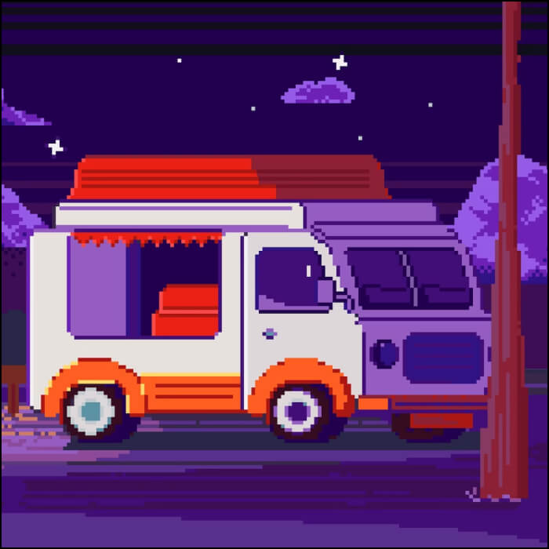
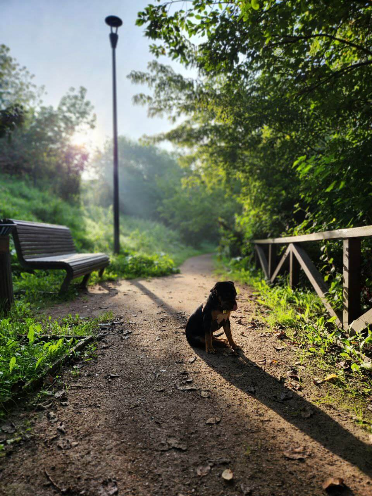
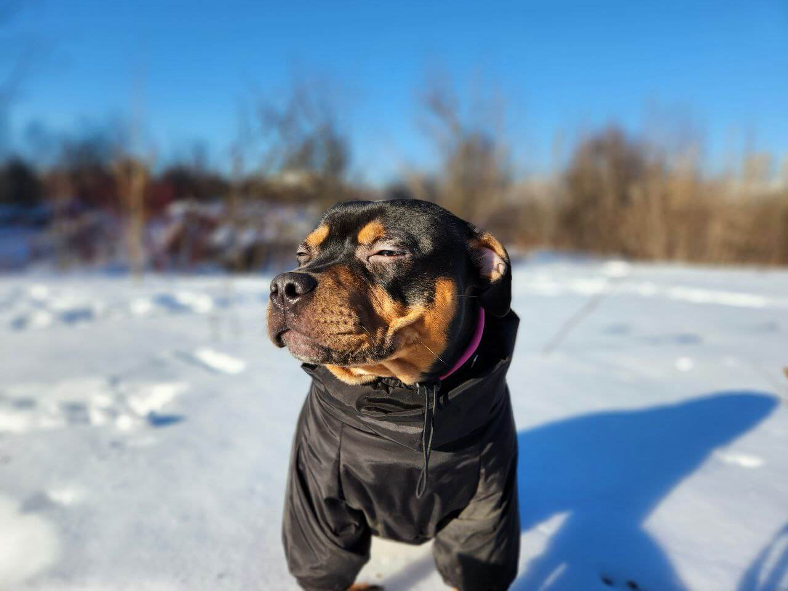
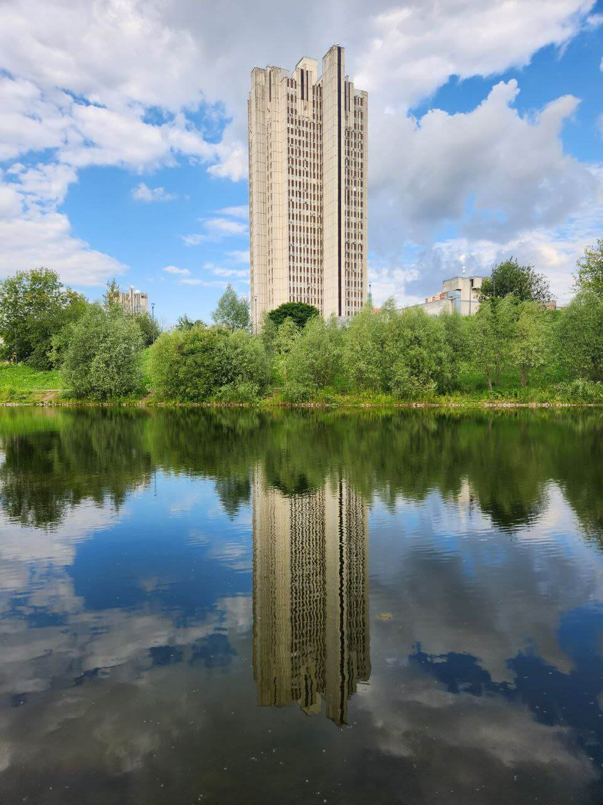
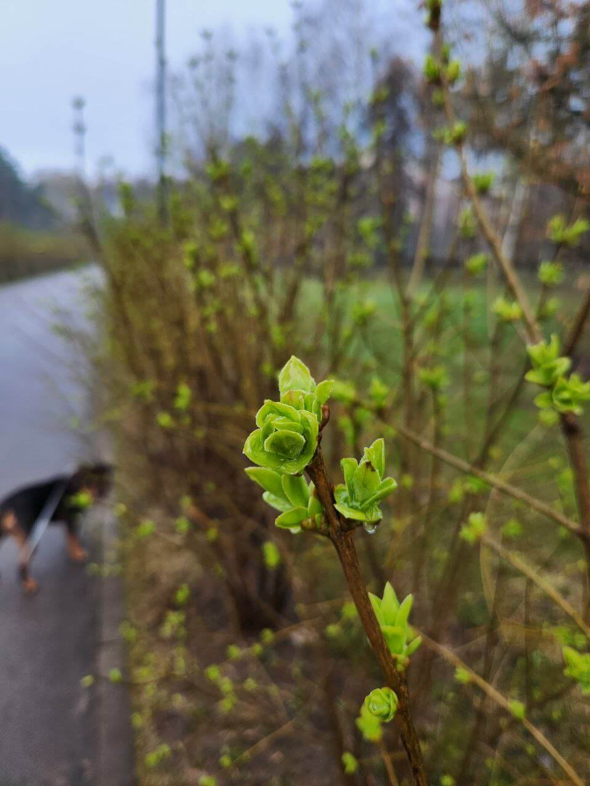
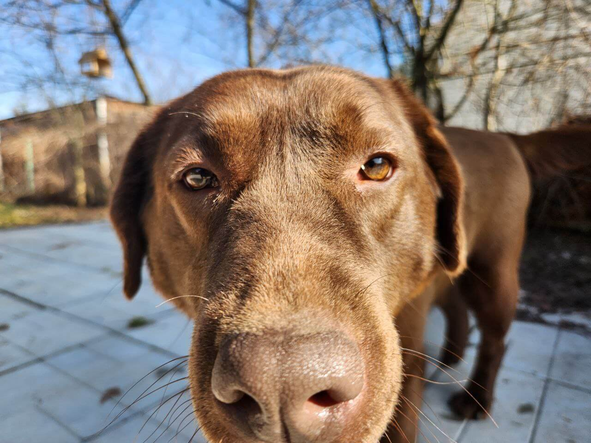
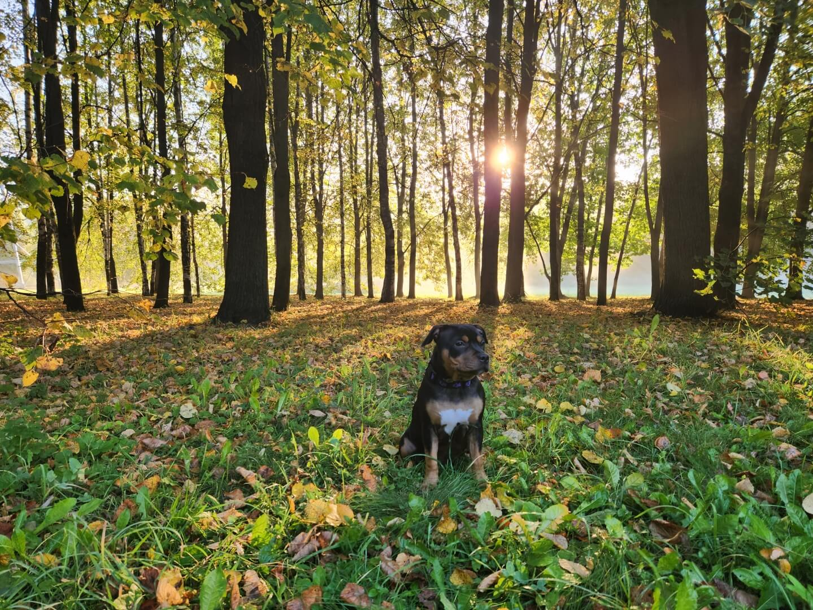

Фритрек и нулевой спринт: Подготовка к работе

<start>
Это было самое начало пути. На этом этапе важно было проникнуться основами и
настроиться на учёбу. И, возможно, подумать, как новые знания могут повлиять на ваше будущее.
После долгих размышлений, преодолевая кучу сомнений, я все таки решился отправиться в
увлекательное путешествие под названием "frontend"
1 спринт: Я — чистый лист

<OMG>
На первых этапах мы работали со страхами и сомнениями, которые часто испытывают
новички. Один из них — страх перед чистым листом. Это, конечно же, намного сложнее, чем боязнь куска бумаги.
Часто за этим ощущением скрываются более глубокие вопросы: с чего начать? а вдруг будет слишком сложно? что,
если я не справлюсь?
Разумеется в таком случае работает поговорка: "Глаза бояться - руки делают".
1 спринт: А если не получится?

<satisfaction>
Первый проект — позади! Но это всё ещё самое начало пути. Радость могла быстро
померкнуть и смениться ожиданием провала. Или вы, наоборот, могли вдохновиться успехами и поверить в себя.
Вдохновление и радость первых успехов настигла меня намного раньше чем первый проект.
Это чувство посетило меня впервые при прохождении пробного спринта, когда получались первые успехи в
"песочнице".
2 спринт: Погоня за идеалом

<perfect>
На этом этапе вы уже достаточно разбирались в основах вёрстки, чтобы понять, как много
ещё впереди. Вы могли попытаться погнаться за идеалом и понять, что он недостижим. А, может, вы вовсе и не
подвержены перфекционизму и вместо того, чтобы сделать идеально, старались просто сделать.
Ооо да, погоня была утомительной но интересной. А "идеал", убегая и оборачиваясь, кричал:
"Perfect... PixelPerfect".
2 спринт: О тех, кто рядом
<family>
Всё это время вы были не одиноки (хотя, возможно, иногда и чувствовали, что одни против
целого мира). Вас окружали одногруппники, команда сопровождения и просто близкие люди, которым можно
пожаловаться, если очередной макет просто так не поддавался. Осваивать что-то новое легче, когда рядом есть
единомышленники, не правда ли?
Во всех случаях когда у меня только возникали мысли негативного оттенка, моя любимая
супруга была на страже хладнокровия и прогоняла их прочь
3 спринт: Обходные стратегии

<refresh>
На этом курсе вы постоянно решали разные задачи. В какой-то момент вам могло
показаться, что решения просто иссякли. Значит, пришло время посмотреть на задачу под другим углом.
В таких ситуациях помогало "обновление" взгляда на проект, которое невозможно без
смещения фокуса внимания на другие вещи в жизни.
3 спринт: Когда опускаются руки

<what?>
Во время учёбы часто возникает чувство, когда не знаешь, за что хвататься. Вроде и
проектную пора сдавать, и задачи хочется порешать, и в теории получше разобраться, и жизнь не забыть пожить. В
такие моменты очень нужна концентрация. Вспомните, откуда вы её черпали.
Ключевой элемент концетрации - это возможность изолироваться от внешних радражителей
(наушники, другая комната, лес, марс).
«Сейчас я здесь»

<where>
Сейчас вы уже очень много знаете о вёрстке. Но это только начало. Во-первых, впереди
ещё много материала про «красотищу». Во-вторых, с окончанием курса учёба не заканчивается. Вёрстка — это целый
мир. И этот мир постоянно меняется. Познать его полностью не получится, но это тот случай, когда важен сам
процесс познания. Ведь часто путь — и есть результат.
Сейчас вторая половина апреля, 4 спринт... и на самом деле я понимаю,что очень мало
знаю. Желание есть, мотивация есть, цели есть, двигаемя дальше!